Stellaris Map Editor
Custom Galaxy Creation & Editing Toolkit for Stellaris 4.4.* Pegasus
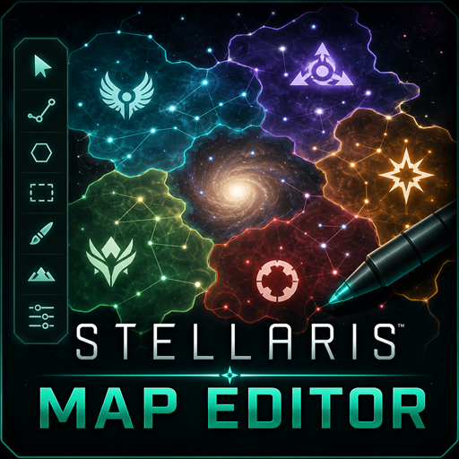
Download
Latest Release (v1.0.5)
Download the latest Windows release of Stellaris Map Editor.
Exports target Stellaris 4.4.* and are tested against game version 4.4.*.
Features
Galaxy Generation
Generate procedural galaxies with advanced controls for size, density, scaling, spacing, and cluster behavior.
Custom Shape Masks
Import PNG masks to create symbolic, geometric, chokepoint, and artistic galaxy layouts.
Visual Editing
Edit stars, hyperlanes, nebulas, gateways, and wormholes directly through an interactive visual interface.
Mod Exporting
Export fully playable Stellaris 4.4-compatible galaxy mods directly from the editor.
Table of Contents
Quick Start
1. Create a New Project
Launch the editor and create a new galaxy project. The project name becomes the exported mod name.
2. Generate or Import a Galaxy Shape
- Generate a procedural galaxy
- Import a custom PNG mask shape (1024x1024)
3. Edit the Galaxy
- Stars
- Hyperlanes
- Nebulas
- Wormholes
- Gateways
- Clusters
4. Export the Galaxy
Export directly into a playable Stellaris mod format for version 4.4.*. In New Game setup, choose Galaxy Shape: Elliptical, then select your exported scenario.
Custom Galaxy Shapes
Stellaris Map Editor supports fully custom galaxy layouts using black-and-white PNG mask images.
- Symbols
- Logos
- Geometric patterns
- Chokepoint maps
- Artistic galaxy designs
- Hand-drawn galaxy layouts
Mask Rules
| Color | Result |
|---|---|
| Black | Valid galaxy generation area |
| White / Transparent | Empty space |
Screenshots
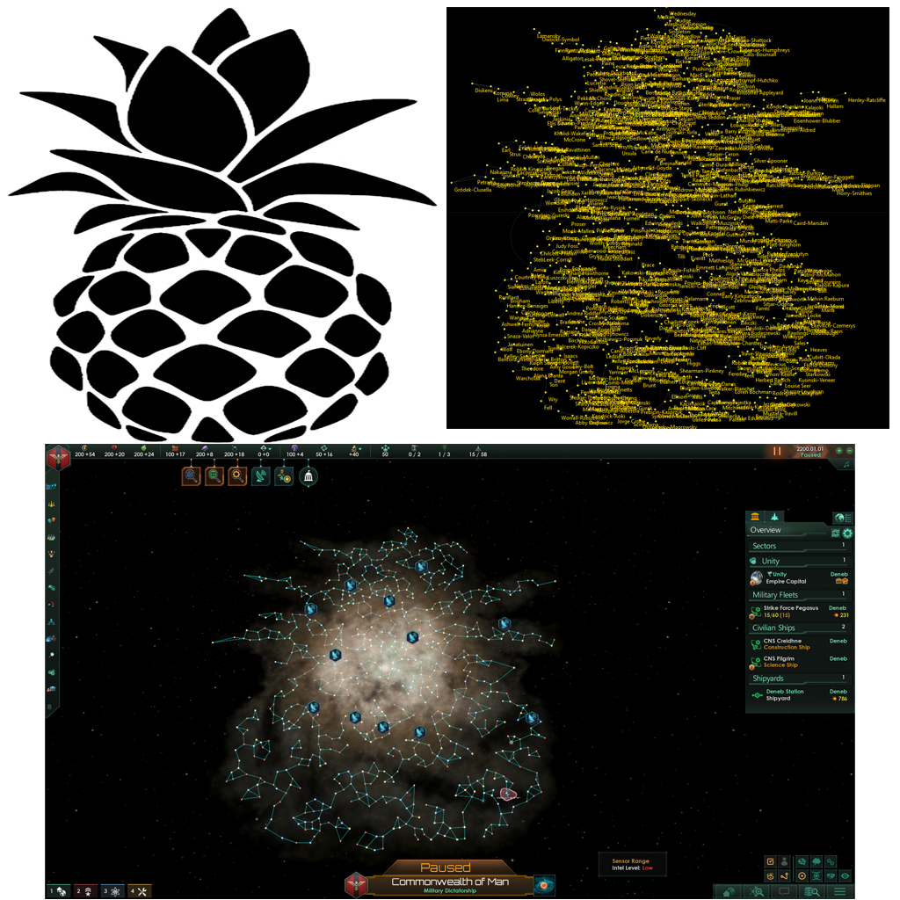
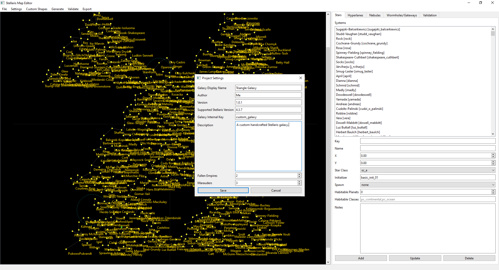
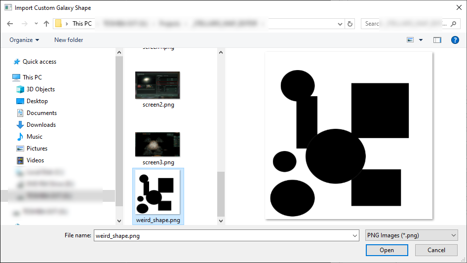
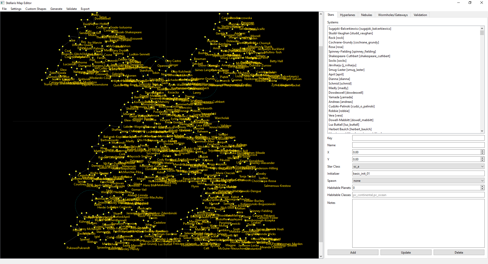

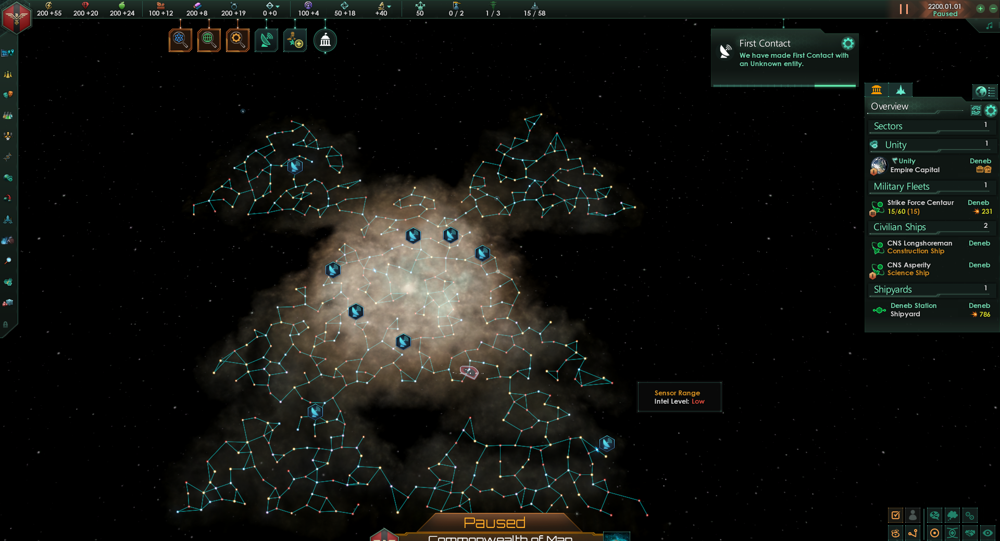
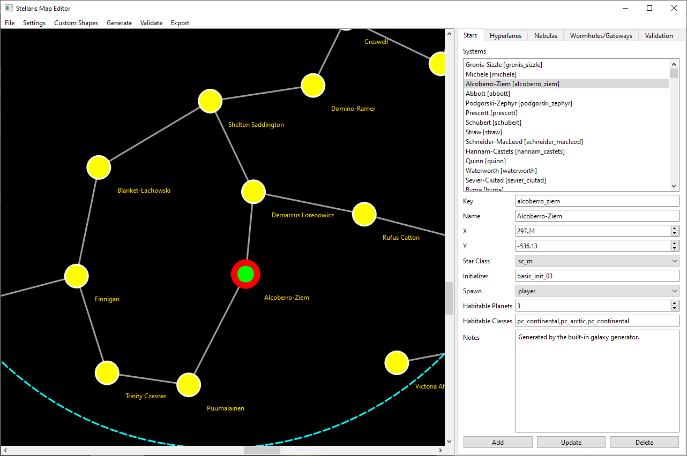

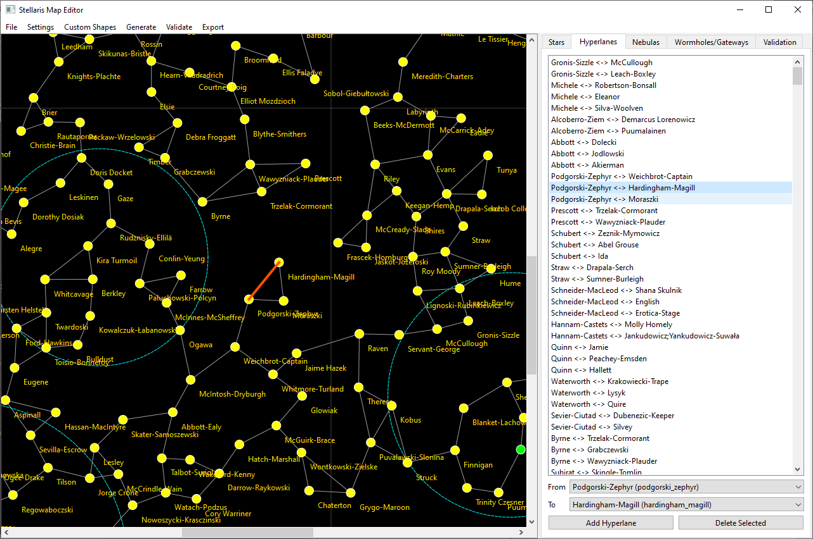
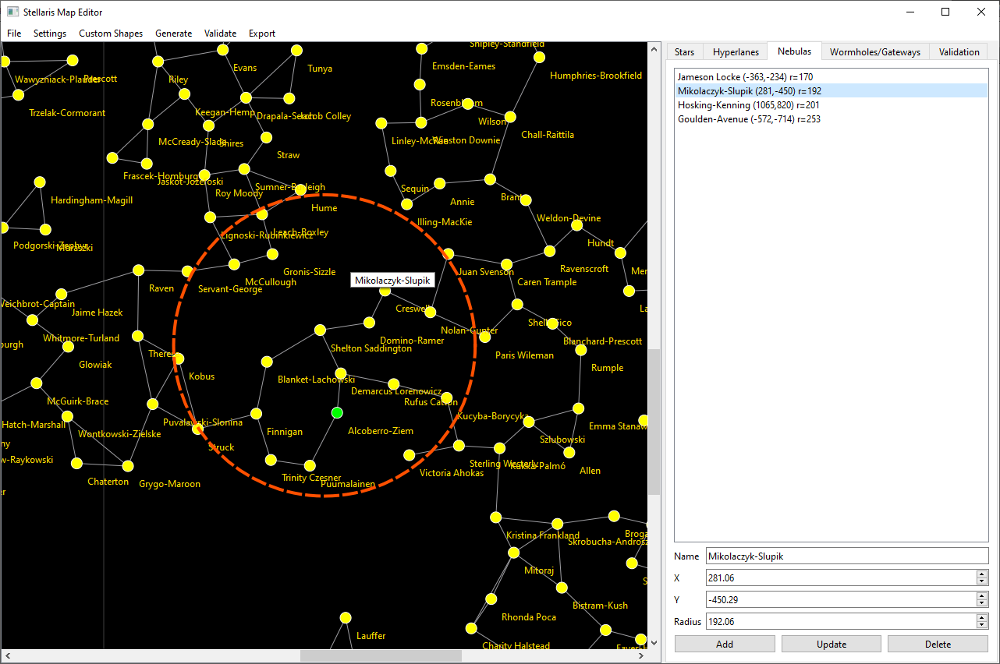
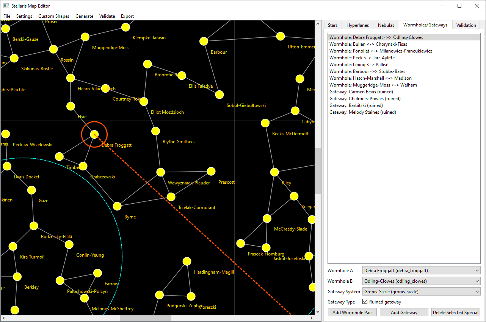
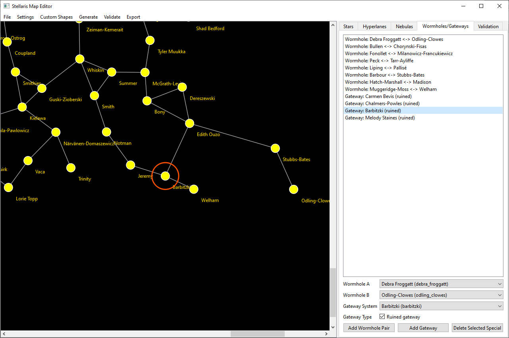


Editing Features
Star Editing
- Create stars
- Move stars
- Rename stars
- Modify system data
- Configure planets and moons
Hyperlane Editing
- Create hyperlanes
- Remove hyperlanes
- Quickly search systems using keyboard shortcuts
Nebula Editing
- Create nebulas
- Resize nebulas
- Reposition nebulas
Wormhole Editing
- Create paired wormholes
- Configure wormhole endpoints
Gateway Editing
- Add gateways to systems
- Configure gateway placement
Tips
Planet Classes and Initializers
You can find valid planet classes and initializers at the official Stellaris modding wiki:
Moving Objects
Zoom in using the mouse wheel for easier precision placement.
Panning the Map
Click and drag empty space to pan around the galaxy.
Searching for Systems
Repeatedly press a letter key inside dropdown fields to quickly cycle through matching system names.
Known Limitations
- Only stars can currently be moved directly on the canvas
- Nebulas, wormholes, gateways, and hyperlanes are edited from their tabs
- Very large galaxies may take longer to generate
- Objects currently need to be reselected after editing
Version History
v1.0.5
- Stellaris 4.4.* Pegasus compatibility update
- Default export target updated to
4.4.* - Fixed invalid
core_clustergalaxy shape in exported scenarios - Fixed gateway spawn syntax for Stellaris 4.4 export
- Fixed generated system initializers exceeding Stellaris system size limits
- Removed Fallen Empires and Marauders from Project Settings (generator controls these)
- Added validation warnings for nebulas, wormholes, and gateways
v1.0.4
- Hyperlanes tab improvements
- Auto-fills the To field when selecting a second star
- Existing hyperlanes auto-select in the list
- Delete Selected removes lanes between From and To
v1.0.3
- Fixed a y-axis bug when moving stars
v1.0.2
- Added Move Selected Star button
v1.0.1
- Selected objects now auto-center on the canvas
- Improved visual highlights